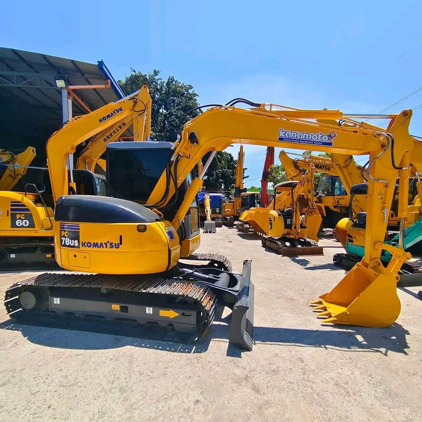

Refurbished Komatsu PC78 Excavator
The Komatsu PC78 is a powerful yet compact hydraulic excavator designed for a wide range of applications, from urban construction and roadwork to agriculture and landscaping. Known for its reliability, fuel efficiency, and performance in confined spaces, the PC78 stands out as an excellent choice for businesses that need a machine that can deliver high performance in tight work environments. When refurbished, the Komatsu PC78 offers an economical solution for companies looking for reliable equipment without the steep price tag of a new machine.
Honestly, it's almost impossible to buy a brand new excavator from China. They either don't exist or are made in China. If a Chinese seller tells you their Caterpillar/Komatsu/Volvo/Kobelco/Hitachi is brand new, they're lying. Therefore, a refurbished excavator is your best bet.

Here are the detailed specifications for a refurbished Komatsu PC78US-6 or PC78US-8 excavator:
Operating Weight and Dimensions
- Operating Weight: 7,800–8,200 kg
- Overall Length: ~6.2–6.4 meters
- Overall Width: ~2.3–2.4 meters
- Overall Height: ~2.7–2.8 meters
- Tail Swing Radius: ~1.6–1.8 meters (ultra-short radius design)
- Ground Clearance: ~400 mm
- Track Width: 450–500 mm standard
Engine and Powertrain
- Engine Model: Komatsu SAA4D95LE-5 (Tier 2 or Tier 3 compliant)
- Rated Power Output: ~48–55 kW (64–74 hp) @ 2,000 rpm
- Maximum Torque: ~240–260 Nm
- Fuel Tank Capacity: ~130–150 liters
- Travel Speed: 2.8–5.0 km/h
- Swing Speed: ~10 rpm
- Gradeability: Up to 30°
Hydraulic System
- Main Pump Type: Variable displacement axial piston pump
- Flow Rate: ~2 × 90–100 L/min
- System Pressure: Up to 27.5 MPa
- Hydraulic Oil Capacity: ~140–160 liters
- Boom Cylinder Bore: ~105 mm
- Arm Cylinder Bore: ~90 mm
- Bucket Cylinder Bore: ~80 mm
Performance Metrics
- Bucket Capacity: 0.28–0.35 m³ (SAE heaped)
- Max Digging Depth: ~4.2–4.4 meters
- Max Reach (Horizontal): ~7.0–7.3 meters
- Max Dump Height: ~4.6–4.8 meters
- Bucket Digging Force: ~60–65 kN
- Arm Digging Force: ~42–45 kN
Cab and Operator Features
- Cab Type: ROPS/FOPS certified
- Display: LCD monitor with diagnostics and fuel tracking
- Controls: Pilot joystick controls with auxiliary hydraulic circuit
- Comfort: Adjustable suspension seat, optional air-conditioning
- Visibility: Wide glass area, optional rear-view camera, LED work lights
Smart Features and Efficiency
- Fuel Efficiency: Mechanical fuel injection with auto idle
- Emissions Control:
- Tier 2 units: No DPF/SCR
- Tier 3 units: Improved combustion and EGR
- Telematics: KOMTRAX support in PC78US-8 (optional)
- Transportability: Easily trailerable under 9-ton class
Attachments Compatibility
- Standard Bucket: 0.28–0.35 m³
- Optional Tools: Hydraulic breaker, auger, compactor, ripper
- Quick Coupler: Manual or hydraulic options available
Refurbishment Scope
Refurbished PC78 units typically include:
- Engine Overhaul: Cylinder head, injectors, turbo, seals
- Hydraulic Restoration: Pump recalibration, valve block testing, hose replacement
- Electrical Diagnostics: Monitor, sensors, wiring harness
- Cab Reconditioning: Seat, joysticks, HVAC, repainting
- Structural Repairs: Boom/bucket welding, bushing replacement, undercarriage rebuild
Overview of the Komatsu PC78 Excavator
The Komatsu PC78 is part of the PC series, known for its superior hydraulic systems, durable components, and outstanding performance in both large and small-scale projects. With its relatively small size, it is ideal for tasks that require a high level of maneuverability, such as trenching, small demolition, and material handling.
Key Specifications of the Komatsu PC78
-
Operating Weight: Approximately 7,800 kg (17,200 lbs)
-
Engine Power: 55.4 kW (74 hp)
-
Max Digging Depth: 4.7 meters (15.4 feet)
-
Max Reach: 6.5 meters (21.3 feet)
-
Bucket Capacity: 0.3–0.4 cubic meters (10.6–14.1 cubic feet)
-
Fuel Tank Capacity: 120 liters (31.7 gallons)
-
Travel Speed: 5.2 km/h (3.2 mph)
The PC78 is designed to be compact, making it suitable for both urban and rural construction sites. Its powerful engine, efficient hydraulics, and sturdy undercarriage ensure it can tackle most excavation tasks, all while maintaining its small footprint.
Engine and Performance
The Komatsu PC78 is powered by a fuel-efficient engine that provides excellent power for digging and material handling tasks. The engine is designed to balance performance with fuel economy, which helps reduce operating costs over time.
-
Engine Power: The Komatsu PC78 is equipped with a Komatsu SAA4D95LE-5 engine, delivering 74 horsepower. This engine is optimized for heavy-duty performance and can handle demanding tasks like digging, lifting, and trenching in various soil types.
-
Fuel Efficiency: With the PC78's fuel-efficient engine, operators benefit from reduced fuel consumption, which is a major cost-saving factor for businesses operating on tight budgets. The machine can operate for longer periods without the need for frequent refueling, reducing downtime.
-
Emissions Compliance: The engine complies with modern emissions regulations, ensuring that the machine is environmentally friendly and able to meet current regulatory standards. This is an important consideration for construction projects in urban areas or regions with stringent environmental laws.
Hydraulic System and Performance
The hydraulic system of the Komatsu PC78 is one of its standout features. With its powerful hydraulic capabilities, this excavator can perform a wide variety of tasks with high efficiency, even in tough working conditions.
-
Hydraulic Efficiency: The PC78 uses Komatsu’s advanced hydraulic technology, ensuring that the machine can handle digging, lifting, and grading with precision. This system allows for smooth operation, reducing fuel consumption and improving overall worksite efficiency.
-
Load-Sensing Hydraulic System: The PC78 features a load-sensing hydraulic system, which automatically adjusts to the weight and resistance of the materials being moved. This ensures that the right amount of hydraulic pressure is applied for each task, improving fuel efficiency and cycle times.
-
Heavy-Duty Lifting and Digging: Despite its compact design, the PC78 is capable of performing heavy-duty lifting and digging, making it a versatile choice for various types of construction work, such as trenching, small-scale excavation, and material handling.
Compact Design for Maneuverability
The PC78 is known for its compact design, which is a key advantage in crowded or confined job sites. Its small size allows it to easily maneuver through narrow spaces while still providing the power needed for heavy-duty tasks.
-
Compact Footprint: With a width of just 2.3 meters (7.5 feet), the PC78 can navigate tight spaces and narrow pathways, making it a suitable option for projects in urban environments, roadwork, and even landscaping.
-
Low Tail Swing: The PC78 features a low tail swing design, which allows the machine to operate in tight areas without the risk of the rear of the machine extending too far. This is particularly useful in environments where space is limited, such as near buildings, fences, or other equipment.
-
Maneuverability in Confined Spaces: The compact design and low tail swing make the PC78 ideal for tasks that require quick and agile movements. Whether you’re digging in a small trench or working in a congested area, the PC78 is built for maximum efficiency in limited space.
Operator Comfort and Safety Features
Komatsu has designed the PC78 with operator comfort and safety in mind, ensuring that the machine is easy to control and provides a comfortable working environment.
-
Ergonomically Designed Cabin: The cabin of the PC78 is spacious, offering great visibility and reducing operator fatigue. The layout of the controls is user-friendly, with all critical functions within easy reach. The adjustable seat and intuitive controls ensure that operators can work for extended periods without discomfort.
-
Safety Features: The PC78 is equipped with safety features like rollover protective structures (ROPS) and falling object protective structures (FOPS) to ensure operator protection. These safety systems are designed to minimize risks and protect the operator in case of an accident.
-
Improved Visibility: The design of the operator’s cabin offers excellent visibility of the worksite, reducing blind spots and ensuring that operators can work safely and efficiently, even in tight spaces.
Benefits of Choosing a Refurbished Komatsu PC78
Purchasing a refurbished Komatsu PC78 offers several advantages, especially for businesses that need reliable machinery at a lower cost. Refurbishing involves thorough inspection and restoration of critical components to ensure the machine performs like new.
-
Cost Savings: A refurbished Komatsu PC78 typically costs 30-40% less than a brand-new machine, allowing businesses to save money while still obtaining a high-performing excavator.
-
Thorough Refurbishment Process: A well-refurbished PC78 undergoes detailed inspections and repairs, including engine checks, hydraulic system maintenance, undercarriage restoration, and cabin refurbishment. These measures ensure that the refurbished unit meets or exceeds original specifications.
-
Warranty and Support: Many refurbished PC78 machines come with warranties, providing customers with additional peace of mind in case of future mechanical issues. This reduces the risk of unexpected repair costs after the purchase.
-
Sustainability: By choosing a refurbished Komatsu PC78, businesses contribute to sustainability by extending the life of quality equipment and reducing waste. Refurbishing high-quality machinery is an environmentally friendly option that helps conserve resources.
Maintenance Tips for the Komatsu PC78
To ensure the long-term reliability and performance of the Komatsu PC78, regular maintenance is crucial. Here are some tips to keep your excavator in optimal working condition:
-
Hydraulic System Maintenance: Regularly inspect hydraulic fluid levels and replace filters as necessary. Keep the hydraulic lines and fittings clean to prevent leaks and ensure efficient operation.
-
Engine Maintenance: Maintain oil levels, replace air filters regularly, and clean the cooling system to prevent overheating and ensure the engine operates at its best.
-
Undercarriage Care: Inspect the undercarriage for wear, especially the tracks, rollers, and sprockets. Replace worn parts to prevent further damage and ensure the machine runs smoothly.
-
Routine Inspections: Perform periodic inspections to check for any signs of wear or leaks. Addressing minor issues early can help avoid major repairs down the road.
Conclusion
The Komatsu PC78 is a compact and powerful excavator designed to tackle a variety of construction, landscaping, and utility tasks. Its fuel-efficient engine, high-performance hydraulic system, and compact design make it an ideal solution for small- to medium-sized projects. A refurbished PC78 provides a cost-effective option without compromising on quality or performance. Whether you're working in tight spaces or need a reliable machine for lifting, digging, or material handling, the Komatsu PC78 is a versatile and efficient choice for your next excavation project.
Our Commitment
- 2 years / 4000 hours warranty.
- EPA certified.
- No sweatshop labor.
Contacts

- [email protected]
- Youtube Instagram Facebook
- Navigation: G206 (Sishu Bridge) in Changfeng County, Hefei City, Anhui Province, 200 meters north to the east